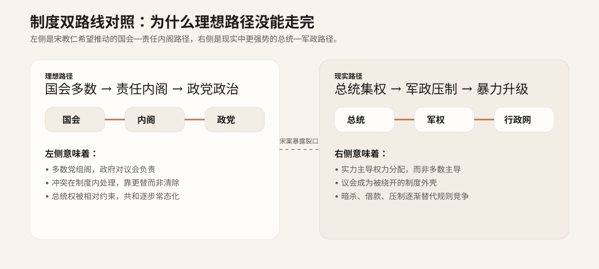

什么叫“民初共和政治的制度困境”
所谓制度困境，不是说民国初年完全没有制度，而是说制度已经写出来、摆出来，却没有足够的现实力量去支撑它运行。1912—1913 年间，中国表面上拥有共和国、临时约法、国会选举、责任内阁、政党竞争等现代政治要素，但真正掌握军队、财政、行政网络和实际强制力的，仍然是北洋集团及其所代表的强人政治逻辑。于是，纸面上的共和制度与现实中的权力运作发生了持续冲突。
换句话说，民初的问题不在于“有没有议会”，而在于议会能不能真正决定政府；不在于“有没有约法”，而在于约法能不能约束最强的政治力量；不在于“有没有选举”，而在于选举的胜者能不能安全执政。宋教仁案之所以重要，就在于它让这些问题突然不再抽象：一个原本准备把国会多数转化为责任内阁的人，在北上途中被枪击，制度的脆弱性被以最直接的方式暴露出来。
四个核心困境
一、选举胜利 ≠ 能够执政
1913 年国会选举中，国民党成为第一大党，宋教仁因此被看作最有可能主导组阁的人。但多数席位并不自动等于国家机器的控制权。议会可以发言、质询、通过议案，却并不直接掌握军队、财政与中央行政网络。赢得选票，只意味着赢得一种政治正当性；而要把这种正当性转化为稳定执政能力，还需要一整套现实力量的配合。
宋教仁案正好说明了这种断裂。按责任内阁的思路，多数党应当组阁并对国会负责，可在民初现实里，多数党接近权力核心反而更容易触怒实力更强的一方。于是，选举胜利不但没有带来安全的制度接班，反而成为冲突升级的前夜。这说明民初共和最危险的问题之一，就是“合法多数”并没有被所有政治参与者共同承认为决定国家权力归属的最高规则。
二、制度文本 ≠ 权力现实
《临时约法》用责任内阁、国会监督与副署制度来限制总统权，这在法理上很先进，也体现了宋教仁一类政治人物希望用制度来驯化权力的尝试。但制度文本本身不会自动生效，它需要一套被主要政治力量共同承认的执行环境。对袁世凯及北洋集团而言，自己手握的是维持国家统一与政治秩序的现实硬实力，约法若把总统压成几乎虚位的存在，他们自然不愿接受。
因此，民初真正的问题并不是“约法写得不漂亮”，而是“它写出来的秩序，是否与当时真实的权力结构相容”。一旦两者不相容，文本就会被绕开、拖延、修改，甚至在政治危机中直接失效。宋教仁想把责任内阁从条文变成现实，而袁世凯则更倾向于让现实权力反过来塑造制度边界，这正是双方路线冲突的根本所在。
三、政党太弱，军政太强
宋教仁代表的是一种“把革命党改造成议会政党”的方向。他希望通过组党、竞选、议会多数、责任内阁，让政治从非常状态走向常态竞争。这条路的前提是：政党能持续组织社会、吸纳人才、形成纪律，并且在必要时获得足够的制度保护。但民初的政党政治基础其实很薄。国民党虽然声势很大，却仍然是由多种力量临时拼合起来的新党，内部路线并不完全一致，社会根基也远未稳固。
与之相比，北洋集团掌握的是军队、行政和地方强制体系。议会可以吵赢，报刊可以骂赢，选举也可以赢，但只要军政实力明显失衡，最后决定政治结果的仍很可能不是辩论，而是控制力。这就是为什么民初“有政党”却未能形成稳定政党政治：政党还不够强，军政力量却已经足够硬。宋教仁案把这一点暴露得非常彻底——政党路线最接近成功的时候，也正是它最脆弱的时候。
四、规则竞争被暴力替代
成熟共和政治的基本前提，是不同政治力量接受在制度内竞争：赢者上台，输者监督，再下一次重新竞争。民初的问题恰恰在于，这种竞争规则并没有牢固到足以约束所有参与者。暗杀、情报、舆论操弄、借款绕会、军警施压、地方独立与武力镇压，这些非常手段始终与制度竞争并行存在。一旦冲突进入关键时刻，规则很容易被抛到一边。
宋案的象征意义正在这里：当多数党领袖不是在议会中被击败，而是在车站里被枪击时，整个社会都会意识到，真正决定政治命运的可能不是制度，而是力量和手段。此后不久，调查受阻、互信崩塌、二次革命爆发，说明问题并不是一桩案件“尚未破完”，而是规则本身已经失去足够的权威。宋教仁案因此不只是暴力事件，更是规则失败的证明。
把抽象问题讲得更直白一些
共和国建立了，不等于共和政治稳固了。 民国成立只是把“皇帝退场”这件事完成了，但新的权力规则还没有真正被所有人接受。谁来统治、怎么交权、谁说了算，这些问题仍处在剧烈博弈之中。
议会存在了，不等于议会真能决定政治。 如果议会没有办法让行政服从、没有能力保护自身决议、也没有控制财政和武装，那么它就更像一个高声辩论的舞台，而不是最高权力的枢纽。
选举赢了，不等于胜者能安全执政。 如果失败的一方掌握更强的硬实力，并不接受把选举结果当作最终规则，那么胜选者接近权力中心时，反而可能面临更大的危险。
制度文本写得再好，也敌不过现实中的军政权力。 约法、法条、宪政设计都需要执行它们的力量。一旦现实中握枪、握钱、握官僚机器的人不愿配合，纸面制度就会迅速露出边界。
理想路径 vs 现实路径
宋教仁希望推动的路径
- 通过国会选举形成多数党。
- 由多数党组建责任内阁。
- 内阁对国会负责，总统处于较弱和较象征的位置。
- 让政治通过公开竞争、法理约束和政党轮替来运行。
- 把辛亥革命的成果从“推翻旧制度”推进到“建立新秩序”。
民初现实实际走向
- 国会多数无法顺利接管国家机器。
- 总统、军权、行政权继续主导权力分配。
- 混合内阁、绕过议会、非常手段成为常态。
- 暗杀、借款、武力与压制逐渐替代制度竞争。
- 共和制度从文本上的分权，退回现实中的集权与动荡。
如果把这两条路径并排来看，就能更清楚地理解宋教仁案为什么不只是“个人悲剧”。它恰好发生在理想路径最接近现实化的时刻，又恰好以最暴力的方式证明：当时的政治结构并不准备让这条路径顺利走完。

这张图把制度篇最核心的判断可视化：问题不是抽象的“民主失败”，而是理想路径与现实路径从一开始就不在同一组力量条件上运行。
宋教仁案在这个结构里处在什么位置
如果只从案情角度看，宋案是一桩震动全国的政治暗杀；但如果放回制度结构中，它更像是一块试金石。它测试的不是单个政治人物的运气，而是民初共和规则到底有没有力量保护一条制度化的政治道路。答案显然是否定的：案件发生后，调查虽然一度推进，却没能稳定地导向一个被各方接受的司法结果；政治互信迅速崩溃，法律解决空间不断收缩，最后以二次革命和更大规模的政治破局收场。
因此，宋案在制度篇里的位置，不是“补充说明一下发生过一桩刺杀”，而是“集中呈现民初共和结构性脆弱的节点”。它让原本还可以通过宪法、议会、组阁去讨论的问题，突然转化成了谁掌握武力、谁能绕开规则、谁能先下手为强的问题。对一个刚刚建立的新共和国来说，这几乎是最危险的信号。
理解制度困境之后，还可以往下看什么
如果首页解决的是“为什么值得看”，那么制度篇解决的就是“为什么这件事不该只按案件去理解”。后面的页面，会把这个结构进一步拆开：人物篇解释宋教仁为什么成为制度焦点，事件篇解释政治进程如何被打断，转折篇解释后果如何层层放大，争议篇则负责给整个专题收住史料边界。